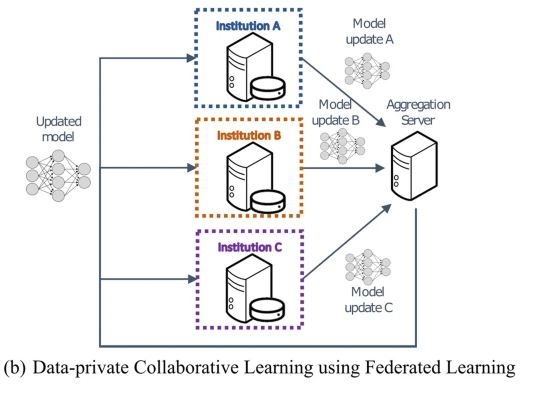

Sharing research data: how?
Sharing data is becoming the golden standard in science. It enables others to reproduce your results and prevent fraud and honest mistakes in data analysis. Moreover, it enables reuse of your data in new analyses, increasing the impact of your work.
Short guide: When to share what data?
- If data are completely anonymous, you can share them publicly in a dedicated repository, see step 1 or 2
- If data cannot be completely anonymized, they are personal. You need a legal basis to share these data:
- Informed consent: what you can do with the data depends on the contents of the consent form.
- If participants consented to public data sharing and their data are not very sensitive (e.g., not from children or clinical groups), publish them in a repository or datapaper.
- If participants consented to sharing with restrictions, use a repository that allows access restrictions or use a data use agreement to share data case by case.
- If participants did not consent to any personal data sharing, share characteristics or aggregated data.
- Public interest: In theory, most research is publicly funded, and therefore we should be able to use this as legal basis for data sharing. However, it is still unclear when we are allowed to use it. The minimal prerequities are:
- the personal data sharing should rely on the principles of lawfulness, fairness and transparency
- informed consent was impossible to obtain, e.g., because the study took place a long time ago and consent cannot be obtained retroactively. Participants not consenting to data sharing is not a valid reason!
- If you share data with a similar purpose as the original research project (such as for collaborating with other researchers on a related topic), a data use agreement suffices (not strictly necessary for EUR collaborators as they are from the same institution). Such agreement should lay out the conditions of storing, sharing and publishing the data. This falls under the scope of processing that is "compatible with the original purpose", which does not require a new/separate legal basis (GDPR Articles 5(1)(b), 6(4) and 89(1)).
- Informed consent: what you can do with the data depends on the contents of the consent form.
Ways of sharing data
Publishing data can go roughly in the following ways:
1. Publish in a data repository
For example (or find one here):
- The EUR Data Repository: for publication packages at the EUR
- All data and materials accompanying a publication
- Only suitable for anonymous data
- See the publication packages page for more information.
- DANS DataverseNL: for publication packages at Leiden University (instructions)
- All data and materials accompanying a publication
- Not suitable for large or publication-independent datasets (max zip file size 10GB) or non-anonymous data
- Only accessibly via institutes that use DataverseNL
- DANS EASY (Dutch)
- For data and materials, not necessarily accompanying a publication
- Has deals with the university but still some limitations to the size of the data (max. 100 GB)
- Is aimed more at archiving than sharing data
- Also has a dark archive for non-anonymous data
- 4TU Research data
- International data repository for science, engineering and design
- Enables open or restricted access, private links, embargoes or even metadata-only records
- Up to 1 TB of storage for affiliated researchers, 10 GB for non-affiliated researchers
- Open Science Framework
- max 5 GB for private, 50 GB for public projects
- Choose storage location in EU: Germany
- Keep your data close to all other relevant files in your OSF project
- OSF is more aimed at project management than dissemination
- Other general-purpose repositories, such as:
- Zenodo (free up to 50GB)
- Dryad (not free)
- Non-EUR Figshare (free, max 20GB private space and 5GB per file)
In all cases, make your data FAIR and take privacy considerations into account.
2. Publish a datapaper
In a datapaper, you describe the data and the methods of collecting them, without the need to analyze them. This will get you a publication out of your data, irrespective of whether or not you publish results. This often requires that you make all described data public, because the aim of such publications is to provide access to high quality datasets and to facilitate reuse. Also, most journals have some policy in which repository you should deposit the data accompanying the datapaper. Note that a datapaper will be peer-reviewed just as well as a regular article. See this link for a list of data journals.
3. Share case-by-case
For data that cannot be shared publicly, you can sometimes still share the data case-by-case. This can be the case:
- For MRI-data for which you have a legal basis to share them, but you may not want to publish publicly because of the sensitivity. For this type of data, you may want to consider using a data use agreement as well
- For data that has not been published about
- For data that does not belong to a publication, data that is too large to share in another way or some other reason
Please note that this is only a FAIR solution if your metadata and access options are publicly findable and available (e.g., consider creating a metadata-only record in a repository).
4. Share only characteristics of the data
If you do not want to or you can't share any real data, you can still make your data valuable:
Aggregated data
If your data are privacy-sensitive and you cannot share them, you can still share aggregated data, for example:
- Share first- and second level MRI data in NeuroVault. You can also link this to your manuscript (and the other way around). NeuroVault allowes meta-analyses of fMRI studies, making it worthwhile to share your group MRI data there. See the NeuroVault page for more information
- Share summary details of your data, such as averages and variation measures. Or make a shinyapp that allows exploring the data without accessing it!
Synthetic data
Creating a synthetic dataset can be useful to capture the statistical idiosyncrasies of your real dataset. This synthetic dataset can be used to reproduce the results of your analysis, without violating any privacy or intellectual property regulations. Read more:
- Review of synthetic generation methods
synthpop: an R package for creating synthetic data (paper, blog how to)- For MRI-data, see brainpower.
Federated learning

Federated learning arises from the field of Artificial Intelligence and relies “on the principle of remote execution—that is, distributing copies of a machine learning algorithm to the sites or devices where the data is kept (nodes), performing training iterations locally, and returning the results of the computation (for example, updated neural network weights) to a central repository to update the main algorithm.” (Kaissis et al., 2020). This means that you do not move your data, while still providing valuable information about it.
Some federated learning tools and projects:
- COINSTAC
- PySyft
- ENIGMA consortium: Consortium with several working groups. Share pre- and post-processing analysis scripts, the leading site will conduct meta-analysis
- OHDSI (Observational Health Data Sciences and Informatics): collaborative to bring out the value of health data through large-scale analytics
- Personal Health Train, part of Health-RI (official website here)
Licensing data
With licenses, you specify what others are permitted to do with your product. You can see it as some kind of agreement: if someone violates the license, you have the right to sue them, just like a regular lawful agreement. For anonymous data, it is recommended to choose a CC0 (public domain) or CC-BY 4.0 license. These open licenses both allow others to use the data without restrictions. For non-anonymous data, use a more restrictive license (but please don't use non-derivate (ND) or non-commercial (NC) licenses, read why here) or formulate your own terms of use, for example in a data use agreement.
Don't know which license to choose? Use a license selector!
Resources
- Data management and sharing tools (list compiled by the Leiden University Library)
- The Turing Way - open data
- Utrecht University information about data sharing
- FAQ about data sharing (Donders Institute)
- Decision aid choosing a repository (not exhaustive)